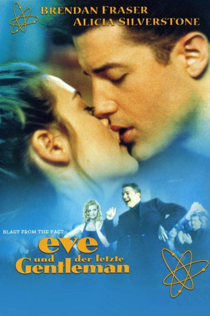
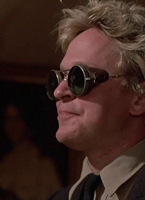
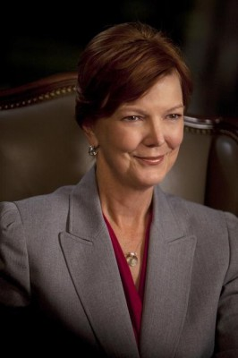

#3307 Eve und der letzte Gentleman
Alternativ: Blast from the Past
 
 IMDB-Wertung: 6.6 / 10
IMDB-Wertung: 6.6 / 10  Metascore: 48
Metascore: 48 
Los Angeles 1962: Kubakrise, Kalter Krieg, die Angst vor dem Atomschlag und ein dummer Zufall machen's möglich! Der Wissenschaftler Webber und seine hochschwangere Frau nehmen Zuflucht in ihrem hausgemachten Super-Atombunker. Das Zeitschloß schnappt zu...\r 35 Jahre nach dem vermeintlichen Atomschlag ist Adam, der Sohn der beiden umsichtigen Forscher, zu einem wahren Gentleman herangewachsen. Und als das Zeitschloß sich endlich öffnet, wird Adam losgeschickt, um Vorräte für den Bunker und eine Frau fürs Leben zu suchen. Damit beginnt für Adam eine absolut wundersame und rasante Reise in eine ihm völlig "neue" Welt...
Jahr: 1999
Dauer: 112 Minuten
FSK: 12
Land: USA Studio: New Line CinemaTonspuren:
Untertitel:
Auflösung: 720p (960x400) Größe: 1525 MB
Genre: Drama, Sci-Fi, Komödie, Liebe
Regisseur:  Hugh Wilson
Hugh Wilson
Drehbuch: Bill Kelly, Bill Kelly, Hugh Wilson
Soundtrack: Steve Dorff
Darsteller:
 Brendan Fraser als Adam
Brendan Fraser als Adam Alicia Silverstone als Eve
Alicia Silverstone als Eve Christopher Walken als Calvin
Christopher Walken als Calvin Sissy Spacek als Helen
Sissy Spacek als Helen Dave Foley als Troy
Dave Foley als Troy Joey Slotnick als Soda Jerk
Joey Slotnick als Soda Jerk- Dale Raoul als Mom
 Douglas Smith als Adam age 11
Douglas Smith als Adam age 11 Don Yesso als Jerry
Don Yesso als Jerry-  Scott Thomson als Young Psycho
 Rex Linn als Dave
Rex Linn als Dave- Cynthia Mace als Betty
 Harry S. Murphy als Bob
Harry S. Murphy als Bob- Richard Gilbert-Hill als Guest
-  Ann Ryerson als Woman Guest #1
 Donovan Scott als Ron
Donovan Scott als Ron- Hugh Wilson als Levy
- William Duffy als Workman #1
- Billy Stevenson als Workman #2
- Karen Geraghty als Woman Buyer
- Jazzmun als Streetwalker
- Hannah Kozak als Drunken Hag
- Julie Zelman als Mother
- Sheila Shaw als Bakery Clerk
- Michael Hagiwara als Japanese Produce Clerk
- Todd Susman als Butcher
- Rosalee Mayeux als Hotel Registration Clerk
- Rod Britt als Hotel Desk Clerk
- Robb Skyler als Marine Manager
 Nathan Fillion als Cliff
Nathan Fillion als Cliff- Todd Robert Anderson als Jason
- Carmen More als Sophie
- Deborah Kellner als Miss Sweet
- Mary Ann Hermansen als Heather
 Jenifer Lewis als Dr. Aron
Jenifer Lewis als Dr. Aron Sonya Eddy als Postal Worker
Sonya Eddy als Postal Worker- Mary Portser als Woman Guest #2
- Gary Cruz als Low Rider
- Robert Sacchi als Bogart DJ
 Stephen Blackehart als Bartender , uncredited
Stephen Blackehart als Bartender , uncredited- Erick Carrillo als 1940's Dancer , uncredited
- Gina-Raye Carter als 1940's Dancer , uncredited
 Fidel Castro als Himself , archive footage, uncredited
Fidel Castro als Himself , archive footage, uncredited Jackie Gleason als Ralph Kramden , archive footage, uncredited
Jackie Gleason als Ralph Kramden , archive footage, uncredited John F. Kennedy als Himself, Reveals Existence of Cuban Missiles , archive footage, uncredited
John F. Kennedy als Himself, Reveals Existence of Cuban Missiles , archive footage, uncredited- Katie MacIntosh als Cute Girl , uncredited
- Brant von Hoffman als Man in the Bus , uncredited
 Hayden Tank als Adam age 3½
Hayden Tank als Adam age 3½- Ryan Sparks als Adam age 8
- Ted Kairys als Navy Pilot
Datei: X:\1999\Eve und der letzte Gentleman (1999, FSK12, 960x400).mp4 seit 09.03.2016
Festplatte: HD 1996-2002
 Es gibt insgesamt 81 Filme in der Gruppe '1999'
Es gibt insgesamt 81 Filme in der Gruppe '1999'